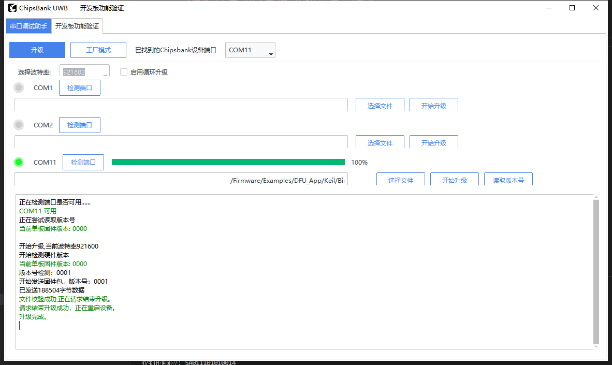
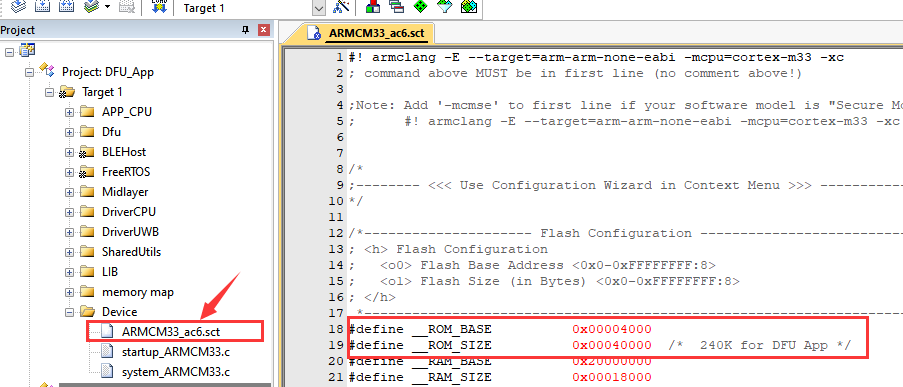
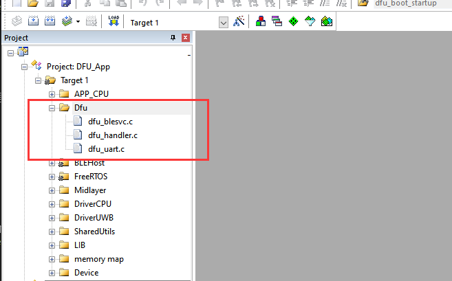

APP_DFU
概述
本文档提供了使用开发板（例如CB5000V210 Anchor开发板）验证DFU功能和FTM产测功能的指南。它涵盖了硬件连接、串行通信设置、产测上位机工具使用方法。
DFU要求
- 以下开发板之一：
CB5000V210 Anchor开发板
- 软件：
电脑端上位机 DFU 升级工具
用户界面
- 串口连接:
将GPIO00连接到串行接收线（RX）。
将GPIO01连接到串行发送线（TX）。
确保所有连接牢固，以避免通信问题。
构建和运行
该示例可以在ChipsBank Connect SDK文件夹结构中的
Firmware\\Examples\\DFU_Bootload及Firmware\\Examples\\DFU_APP找到相关程序。
测试
- 连接开发板
准备一个合适的typeC 类型的USB线，确保两端与您的计算机和开发板兼容。
将typeC 类型的USB线的一端插入计算机的USB端口，另一端插入开发板的typeC 端口。
打开计算机上的设备管理器，检查是否识别到新的COM端口。如果没有，请检查USB线连接并确保安装了正确的驱动程序。
- 开发板准备
首先下载DFU_Bootload程序，下载完成后进行断电复位。
- 上位机升级
打开上位机工具。
检查端口：确认上位机工具检测到开发板对应的端口。
端口与波特率设置：在工具中选择对应的端口，设置波特率为 921600 。
选择升级文件：在工具中选中 DFU_APP 工程下
\Firmware\Examples\DFU_App\Keil\BinFile\APP.bin的 bin 文件。开始升级：点击开始升级按钮，执行 DFU 升级操作，等待升级进度条完成。
结果查看：升级完成后，点击查看固件版本号按钮，查看固件版本号是否与程序中对应的版本号对应，如果是则对应升级成功。
- 上位机显示如下
- 
添加DFU到其应用程序中
修改sct
根据FlasH内存分配表（在此文档下半部分）对应用程序需要修改.sct文件的配置，设置基地址为0x00004000,大小配置为0x00040000，如下图所示：
添加DFU库
DFU相关功能的库在SDK文件夹
\Firmware\Components\Midlayer\Dfu路径下，需要把对应的库即路径添加到keil工程中，如下图所示：
添加初始化及任务
在需要实现DFU功能的应用程序中，程序如下图所示：
编写DFU任务函数
void app_task_uart_dfu(void *pvParameters)
{
dfu_uart_init();
while (1)
{
dfu_uart_polling();
}
}
创建DFU任务
xTaskCreate((TaskFunction_t)app_task_uart_dfu, "Task: BLE Application", 1024, NULL, 1, NULL);
Flash map
以下是flash的内存分配表
Bus Address |
Size |
Bank Name |
Description |
Flash Address |
|---|---|---|---|---|
0x7E000 |
4K |
User Calibration |
0x7F000 |
|
0x7D000 |
4K |
Boot setting A |
0x7E000 |
|
0x7C000 |
4K |
Boot setting B |
Backup for boot setting |
0x7D000 |
… |
User Data (Option) |
|||
0x40000* |
240K |
Backup bank |
Save the new APP |
0x41000* |
… |
User Data (Option) |
|||
0x04000 |
240K |
APP bank |
0x05000 |
|
0x00000 |
16K |
Dfu Boot |
UART+Copy+Jump |
0x01000 |
注意：
1.芯片引导信息区（4K）不包括在Flash Map上。
2.Flash代码区（<=256K）： Dfu Boot 16K + APP Bank 240K = 256K。
3.备份bank起始地址可通过更新进度配置。
Boot 配置区
Size |
Name |
Description |
|---|---|---|
4 |
CRC |
CRC for Boot setting (Boot mode + APP bank info + Backup bank info + ECC Public Key) |
4 |
Boot mode |
1: Stay at boot mode only. 0: Normal boot |
4*10 |
APP bank info |
|
4*10 |
Backup bank info |
|
64 |
ECC Public Key |
Public Key for verify the update |
命令帧 (Max 256 Byte)
Head |
CMD_H |
CMD_L |
Request/ Respond |
Data length(MAX 128Byte) |
Data(n byte) |
Check sum |
|---|---|---|---|---|---|---|
0x9B |
0 |
n |
Command ID + len + Data |
响应帧
Head |
CMD_H |
CMD_L |
Request/ Respond |
Data length(MAX 128Byte) |
Data(n byte) |
Check sum |
|---|---|---|---|---|---|---|
0x9B |
1 |
n |
code |
Command ID + len + Data |
命令列表
NB |
Command ID |
Name |
Description |
|---|---|---|---|
1 |
0x0100 |
Get firmware version |
Fix respond just for confirm |
2 |
0x0110 |
Start upgrade with version |
The firmware version going to update (address is Backup bank address) |
3 |
0x0111 |
Pack Data |
The specific firmware data in the pack |
4 |
0x0112 |
Verify and active |
Verify the firmware when send all packs. |
5 |
0x0113 |
Finish DFU |
Exit DFU mode |
6 |
0x0120 |
Reset |
Reset the chip |
启动升级命令格式
Size(Byte) |
Name |
Description |
|---|---|---|
4 |
Version |
The firmware version of firmware file. |
包命令格式
Size(Byte) |
Name |
Description |
|---|---|---|
4 |
Address Offset |
The address offset of this pack. |
1 |
Size |
The size of this pack. |
128 |
Data |
The firmware file data |
4 |
CRC |
The CRC of this pack. |
验证和激活
Size(Byte) |
Name |
Description |
|---|---|---|
4 |
CRC |
The CRC of whole new firmware file. |
4 |
Size(option) |
The size of new firmware file. |
固件信息响应
Size(Byte) |
Name |
Description |
|---|---|---|
4 |
APP bank start address |
The start address of application firmware. |
4 |
Load address |
The start address of where to save the firmware. |
4 |
Size |
The size of new firmware file. |
4 |
CRC |
The CRC of whole firmware file. |
4 |
Version |
The firmware version of firmware file. |
Bank信息命令格式
Size(Byte) |
Name |
Description |
|---|---|---|
4 |
APP bank start address |
The start address of application firmware. |
4 |
Load address |
The start address of where to save the firmware. |
4 |
Version |
The firmware version of firmware file. |
FTM产测验证
- 以下开发板之一：
CB5000V210 Anchor开发板
- 软件：
电脑端上位机产测工具
用户界面
- 串口连接:
将GPIO00连接到串行接收线（RX）。
将GPIO01连接到串行发送线（TX）。
确保所有连接牢固，以避免通信问题。
测试
- 连接开发板
准备一个合适的typeC 类型的USB线，确保两端与您的计算机和开发板兼容。
将typeC 类型的USB线的一端插入计算机的USB端口，另一端插入开发板的typeC 端口。
打开计算机上的设备管理器，检查是否识别到新的COM端口。如果没有，请检查USB线连接并确保安装了正确的驱动程序。
- 产测
打开产测工具。
检查端口：确认产测工具检测到开发板对应的端口。
端口与波特率设置：在工具中选择对应的端口，设置波特率为 921600 。
点击工厂模式开关，使能产测
点击相应的产测功能按钮进行相关功能测试


添加FTM产测到其应用程序中
- 添加FTM库

- 添加初始化产测功能


{kind=link}
{kind=link}
{kind=link}
产测命令列表
序号 |
指令集 |
功能 |
|---|---|---|
1 |
0x7525 |
产测开关 |
2 |
0x0001 |
读取芯片ID |
3 |
0x0010 |
读取频偏校准值 |
4 |
0x0011 |
写入频偏校准值 |
5 |
0x0012 |
读取默认功率等级 |
6 |
0x0013 |
写入默认功率等级 |
7 |
0x0014 |
读取TOF校准值 |
8 |
0x0015 |
写入TOF校准值 |
9 |
0x0017 |
读取AOA校准值 |
10 |
0x0018 |
写入AOA校准值 |
11 |
0x0030 |
Tx发包数量 |
12 |
0x0031 |
Tx发包间隔 |
13 |
0x0032 |
Tx开关 |
14 |
0x0040 |
Rx通道配置 |
15 |
0x0041 |
Rx开关 |
16 |
0x0042 |
获取Rx收包数量 |
17 |
0x0050 |
测距模式 同步ID 配置 |
18 |
0x0051 |
读取测距模式 同步ID |
19 |
0x0052 |
测距模式频率配置 |
20 |
0x0053 |
读取测距模式频率 |
21 |
0x0060 |
测距模式Tx开关 |
22 |
0x0070 |
测距模式Rx通道配置 |
23 |
0x0071 |
测距模式Rx开关 |
24 |
0x0072 |
获取测距模式Rx数据结果 |
Overview
This document provides a guide for verifying the DFU (Device Firmware Upgrade) functionality and FTM production test features using a development board (e.g., CB5000V210 Anchor development board). It covers hardware connections, serial communication setup, and usage of the upper machine tools for testing.
DFU Requirements
- One of the following development boards:
CB5000V210 Anchor development board
- Software:
Upper machine DFU upgrade tool on PC
User Interface
- Serial Port Connection:
Connect GPIO00 to the serial receive line (RX).
Connect GPIO01 to the serial transmit line (TX).
Ensure all connections are secure to avoid communication issues.
Build and Run
The example can be found in the ChipsBank Connect SDK folder structure under
Firmware\\Examples\\DFU_BootloadandFirmware\\Examples\\DFU_APP.Testing
- Connect the Development Board
Prepare a suitable USB cable, ensuring both ends are compatible with your computer and the development board.
Insert one end of the USB cable into your computer’s USB port and the other end into the development board’s Type-C port.
Open Device Manager on your computer to check if a new COM port is recognized. If not, verify the USB connection and ensure correct drivers are installed.
- Reset the Development Board
First download the DFU_Bootload program, then power-cycle the board after downloading.
- Upper Machine Upgrade
Launch the upper machine software.
Check port: Confirm that the software detects the corresponding port of the development board.
Set the port and baud rate: Select the appropriate port in the software and set the baud rate to 921600.
Select the upgrade file: Choose the
APP.binfile located at\Firmware\Examples\DFU_App\Keil\BinFile\.Start the upgrade: Click the “Start Upgrade” button to perform the DFU firmware update, and wait until the progress bar completes.
Verify result: After the upgrade finishes, click the “Check Firmware Version” button to confirm that the version matches the one in the program. A match indicates a successful upgrade.
Expected Output
After the upgrade is complete, you should observe a change in the firmware version, indicating a successful DFU upgrade.
Adding DFU to Your Application
Modify sct
Add DFU Library
Add Initialization and Tasks
In the application that needs to implement the DFU function, it is necessary to add the initialization and task of the DFU library to maintain the state of waiting for updates at all times, as shown in the following figure:
Write DFU task functions
void app_task_uart_dfu(void *pvParameters) { dfu_uart_init(); while (1) { dfu_uart_polling(); } }Create a DFU task
xTaskCreate((TaskFunction_t)app_task_uart_dfu, "Task: BLE Application", 1024, NULL, 1, NULL);
- Flash map
The following is flash’s memory allocation table
Bus Address
Size
Bank Name
Description
Flash Address
0x7E000
4K
User Calibration
0x7F000
0x7D000
4K
Boot setting A
0x7E000
0x7C000
4K
Boot setting B
Backup for boot setting
0x7D000
…
User Data (Option)
0x40000*
240K
Backup bank
Save the new APP
0x41000*
…
User Data (Option)
0x04000
240K
APP bank
0x05000
0x00000
16K
Dfu Boot
UART+Copy+Jump
0x01000
Note：
The chip booting info area(4K) not included on the Flash Map.
Flash code area(<=256K): Dfu Boot 16K + APP Bank 230K = 246K.
Backup Bank start address configurable by update progress.
Boot setting bank
Size
Name
Description
4
CRC
CRC for Boot setting (Boot mode + APP bank info + Backup bank info + ECC Public Key)
4
Boot mode
1: Stay at boot mode only. 0: Normal boot
4*10
APP bank info
4Byte: Firmware Start address
4Byte: Reserve
4Byte: Firmware Size
4Byte: Firmware CRC
4Byte: Firmware Version
4Byte: Firmware Active
4Byte x 4: Reserve
4*10
Backup bank info
4Byte: Firmware Start address
4Byte: Load Address
4Byte: Firmware Size
4Byte: Firmware CRC
4Byte: Firmware Version
4Byte: Firmware Active
4Byte x 4: Reserve
64
ECC Public Key
Public Key for verify the update
Command Frame (Max 256 Byte)
Head
CMD_H
CMD_L
Request/ Respond
Data length(MAX 128Byte)
Data(n byte)
Check sum
0x5A
0
n
Command ID + len + Data
Respond frame
Head
CMD_H
CMD_L
Request/ Respond
Data length(MAX 128Byte)
Data(n byte)
Check sum
0x5A
1
n
code
Command ID + len + Data
Command list
NB
Command ID
Name
Description
1
0x0100
Get firmware version
Fix respond just for confirm
2
0x0110
Start upgrade with version
The firmware version going to update (address is Backup bank address)
3
0x0111
Pack Data
The specific firmware data in the pack
4
0x0112
Verify and active
Verify the firmware when send all packs.
5
0x0113
Finish DFU
Exit DFU mode
6
0x0120
Reset
Reset the chip
Start upgrade command format
Size(Byte)
Name
Description
4
Version
The firmware version of firmware file.
Pack command format
Size(Byte)
Name
Description
4
Address Offset
The address offset of this pack.
1
Size
The size of this pack.
128
Data
The firmware file data
4
CRC
The CRC of this pack.
Verify and active
Size(Byte)
Name
Description
4
CRC
The CRC of whole new firmware file.
4
Size(option)
The size of new firmware file.
Firmware Info respond
Size(Byte)
Name
Description
4
APP bank start address
The start address of application firmware.
4
Load address
The start address of where to save the firmware.
4
Size
The size of new firmware file.
4
CRC
The CRC of whole firmware file.
4
Version
The firmware version of firmware file.
Bank info command format
Size(Byte)
Name
Description
4
APP bank start address
The start address of application firmware.
4
Load address
The start address of where to save the firmware.
4
Version
The firmware version of firmware file.
FTM Production Test Verification
- One of the following development boards:
CB5000V210 Anchor development board
- Software:
PC-based factory test tool
Testing
- Connect the Development Board
Prepare a suitable Type-C USB cable that is compatible with both your computer and the development board.
Connect one end of the USB cable to the computer’s USB port and the other end to the development board’s Type-C port.
Open Device Manager on your computer and check if a new COM port is detected. If not, verify the USB connection and ensure the correct driver is installed.
- Factory Test Mode
Open the factory test tool.
Check port: Confirm the tool detects the development board’s corresponding port.
Port and Baud Rate Settings: Select the appropriate port in the tool and set the baud rate to 921600.
Enable factory mode by clicking the factory mode switch.
Click the corresponding test function buttons to perform functional tests.
Adding FTM Factory Test to Your Application
- Add FTM Library
-
- Add Initialization for Factory Test
-
Production Test Command List
NB
Command ID
Name
1
0x0000
FTM Mode Switch
2
0x0001
Read Chip ID
3
0x0010
Read Frequency Offset Calibration
4
0x0011
Write Frequency Offset Calibration
5
0x0012
Read Default Power Level
6
0x0013
Write Default Power Level
7
0x0014
Read TOF Calibration Value
8
0x0015
Write TOF Calibration Value
9
0x0017
Read AOA Calibration Value
10
0x0018
Write AOA Calibration Value
11
0x0030
TX Packet Count
12
0x0031
TX Packet Interval
13
0x0032
TX Switch
14
0x0040
RX Channel Configuration
15
0x0041
RX Switch
16
0x0042
Get RX Packet Count
17
0x0050
Ranging Mode Sync ID Setup
18
0x0051
Read Ranging Mode Sync ID
19
0x0052
Ranging Mode Frequency Setup
20
0x0053
Read Ranging Mode Frequency
21
0x0060
Ranging Mode TX Switch
22
0x0070
Ranging Mode RX Channel Setup
23
0x0071
Ranging Mode RX Switch
24
0x0072
Get Ranging Mode RX Data Result